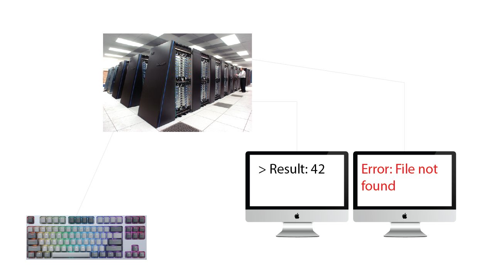
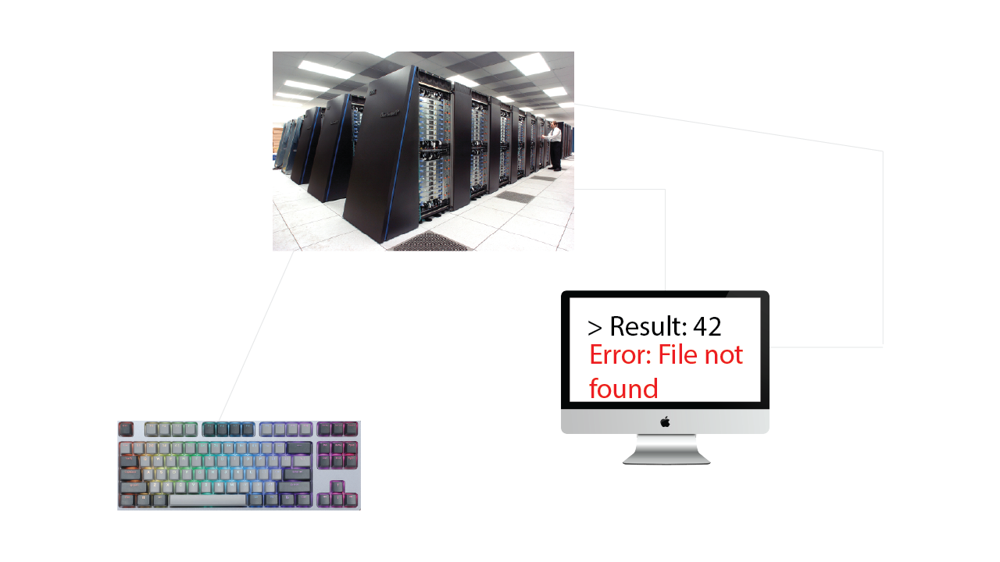
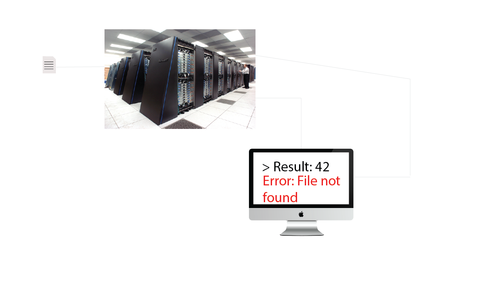
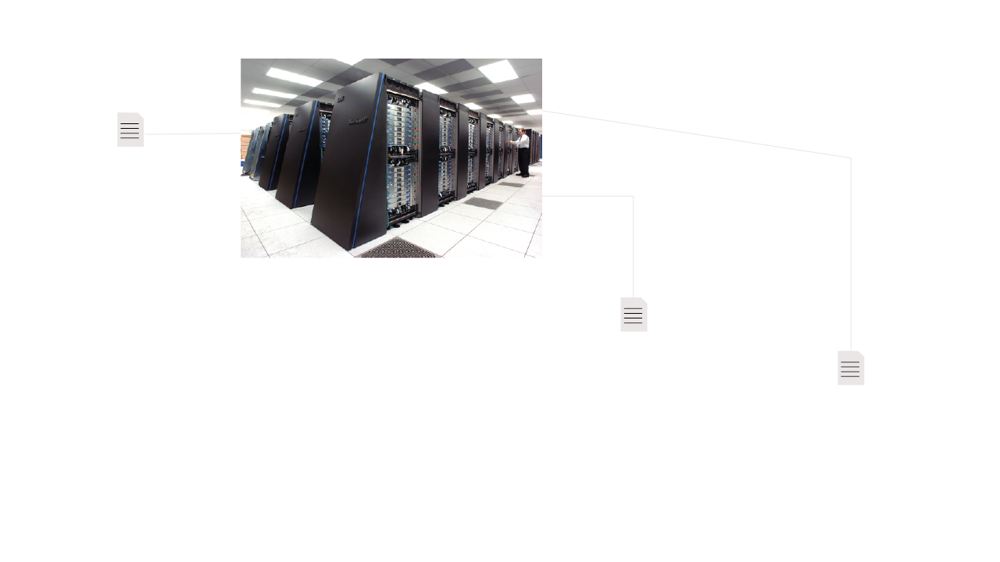

Bastian Schiffthaler
Output streams
stdin: &0 Stream for input datastdout: &1 Stream for output datastderr: &2 Stream for error messages[*]: &3+ Streams for any other purposeExample streams: fully interactive, split streams
Example streams: fully interactive, only one terminal
Example streams: only output interactive, only one terminal
Example streams: non-interactive
Redirecting streams
Operators:
> Write to file/stream>> Append to file/stream< Read from file/streamExamples of redirecting stdin/stdout
# Write stdout to terminal
echo "Hello"
# Read from stdin. Type some lines. [Ctrl + d] to exit
cat
# Redirect stdin from a file
cat < hello.txt
# Redirect stdout to a file, overwriting it if it exists
echo "Hello" > hello.txt
cat < hello.txt
# Redirect stdout to a file, appending to it if it exists
echo "World" >> hello.txt
cat < hello.txt
Redirecting stderr
# Print a message directory to stderr
echo "[Error]: You did something wrong" >&2
# Start a program redirecting stdout to stderr
some_program arg1 arg2 >&2
# Start a program redirecting stderr to stdout
some_program arg1 arg2 2>&1
Special operator: &>
Redirects both stdout and stderr
# Redirect all streams
some_program &> all_output.log
Pipes
| operator
program_x | program_y | ... | program_n
Example - Count how many fasta files are in a directory
ls "*.fa" | wc -l
ls "*.fa": List files ending with ".fa"wc -l : Count number of lines